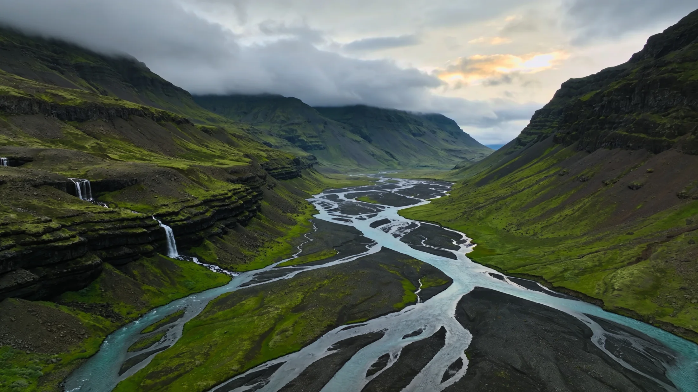
The edge of Northern Europe's
largest wilderness
Óbyggðir


The last farm in the valley
Cross the old wooden bridge and you step into the spirit of the past. A farm at the end of Norðurdalur where the buildings, the food and the hosts all play their part, and the wilderness begins at the fence line.
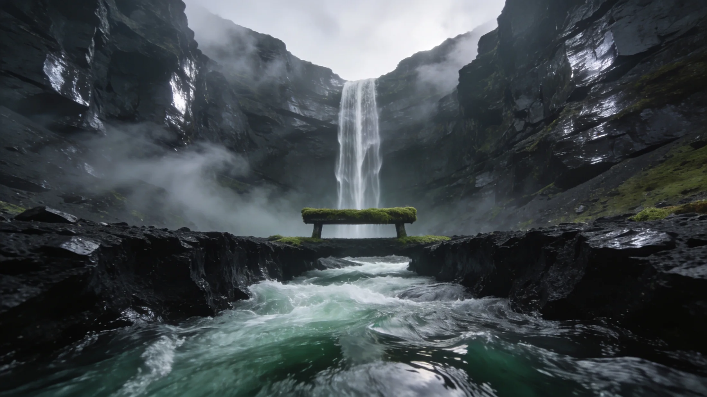
Our season
Between mid May and the end of September the valley is open, green and awake. The exhibition and restaurant are open daily, and in winter the farm opens on request.
- 15 May to 30 SeptExhibition open daily 11 to 18
- All yearAccommodation, open every season
- On requestWinter opening and group visits
Day tours
From two hours to a whole day, riding or hiking, the same way our ancestors travelled. All tours run in English.
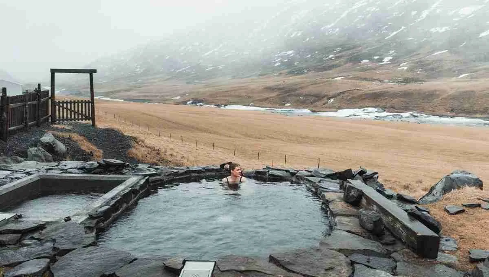
Wilderness Spa Retreat
A truly relaxing escape in the hot pool above the river.
Spa Retreat
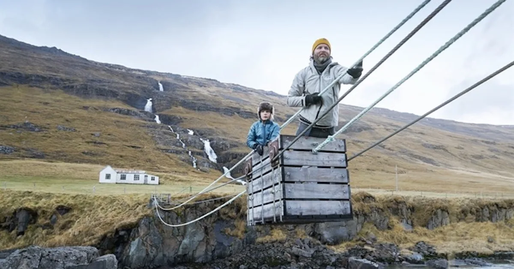
Abandoned Farm Hike
Winch yourself over the Jökulsá by cable cart and walk to the abandoned farm.
Farm Hike
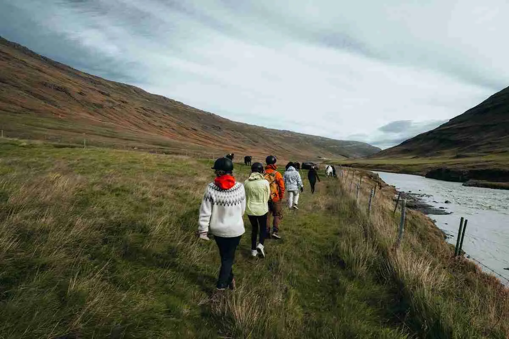
Riding into the Wild
Ride into the glacier valley on Icelandic horses.
Riding
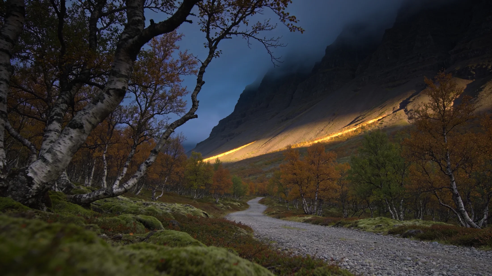
Midnight Ride
The midnight sun of an Icelandic summer night, on horseback.
Midnight
Waterfall Trail
A whole day among the fifteen waterfalls of the Jökulsá.
Waterfalls
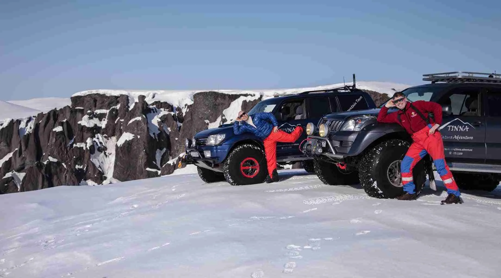
Super Jeep Adventure
Up out of the valley and onto the highland plateau.
Super Jeep
"The beautiful, creative displays are part museum and part art installation. It is unquestionably worth your time."
Sleep in a museum
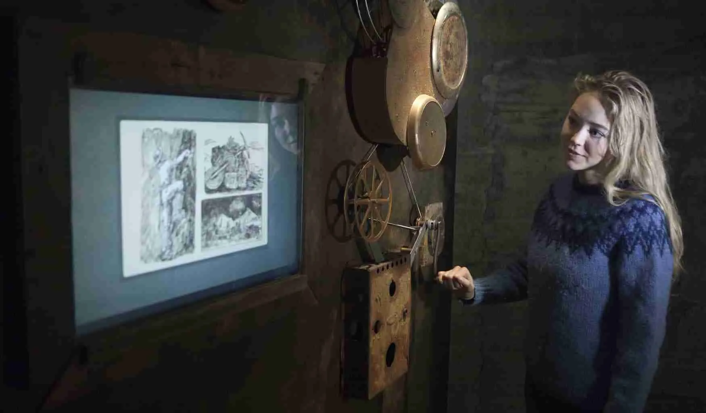
The Farmhouse
Delightfully renovated old rooms above the exhibition. Every object in the house has a story, and you sleep among them.
[ N64 57.874 W15 09.199 ]
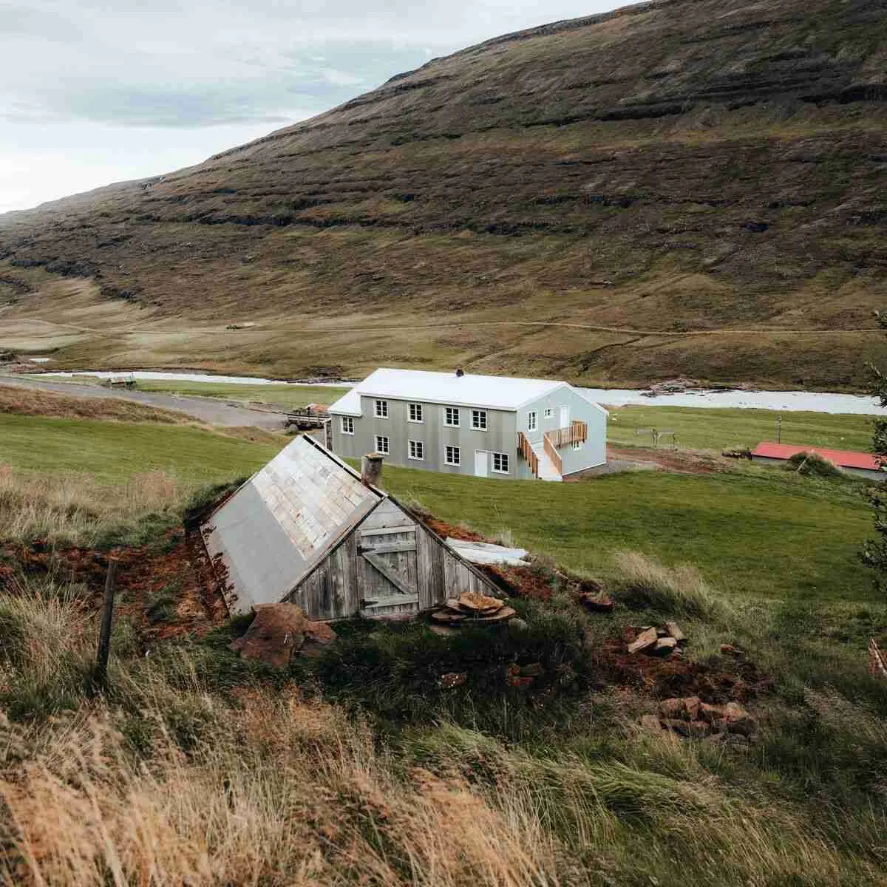
The Turf House
Preserved and rebuilt the old way, turf roof against the mountain weather, the river below.
[ N64 57.874 W15 09.199 ]
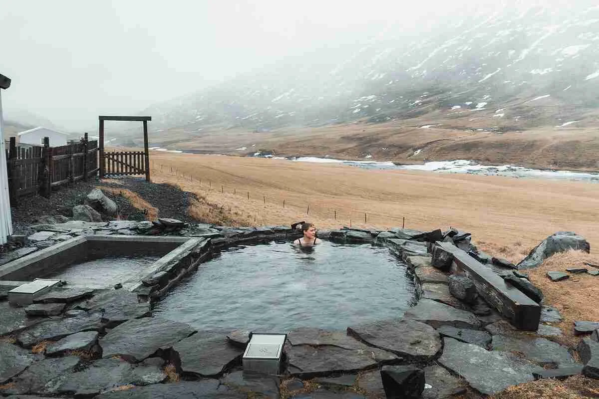
The Hot Pool
Warm water at the edge of the wilderness, open to the valley and the birds.
[ N64 57.874 W15 09.199 ]
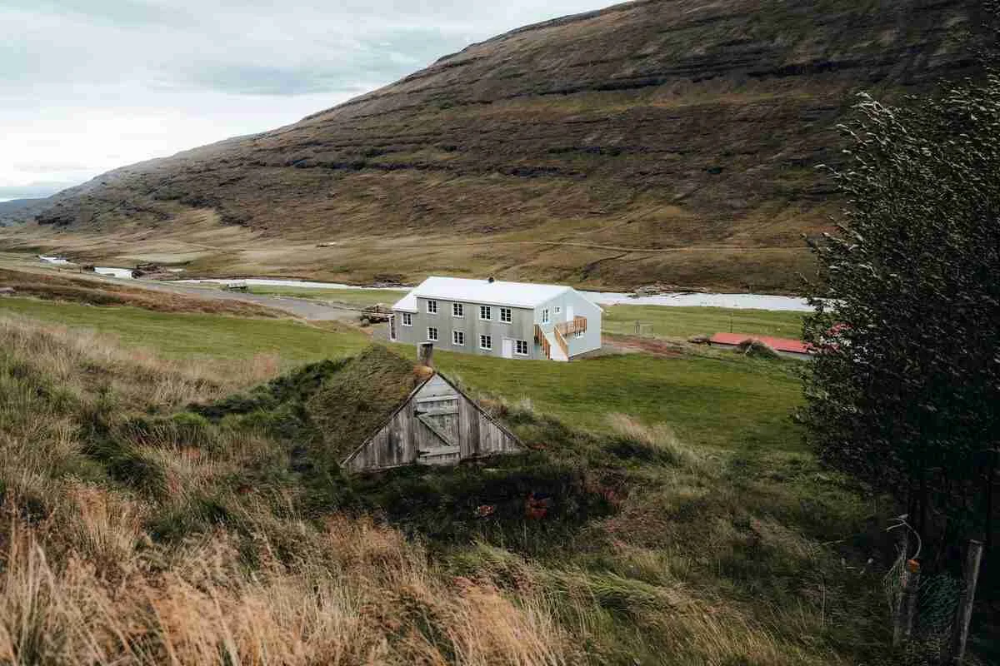
"A remote farm that offers museum exhibits, unique accommodation, local food, riding and hiking. The historic exhibits are of superb quality, as is the entire farm concept."
65º 15' N 14º 24' W
Egilsstaðir
To the end of the road
From Egilsstaðir the road follows Lagarfljót and climbs into Norðurdalur. Where it ends, the farm begins.
N64 57.874 W15 09.199
Óbyggðasetur
EGSÓBS
65º 15' N 14º 24' W
Egilsstaðir
Leave the ring road and turn up the valley.
Lagarfljót
The road follows the long lake into Fljótsdalur.
The road ends
Norðurdalur narrows, and the Jökulsá runs beside you with its fifteen waterfalls.
N64 57.874 W15 09.199
Óbyggðasetur
Park, cross the wooden bridge, and step into the past.
- 15waterfalls on the Jökulsá, more than any river in Iceland
- 1cableway across the glacial river, winched by hand
- N64 57.874W15 09.199, Norðurdalur í Fljótsdal
The exhibition
Life in the wilderness
Designed by the farm's own owners, a film director and a historian. Part museum and part art installation, it follows the people who lived out here, and you work the machines yourself.
- Open daily
- 11 to 18
- Season
- 15 May to 30 September
- Winter
- On request
Just like grandma's
Everything is made in the old kitchen in front of our guests. Icelandic lamb, fish from the east, and baked goods made with rhubarb from our own field.
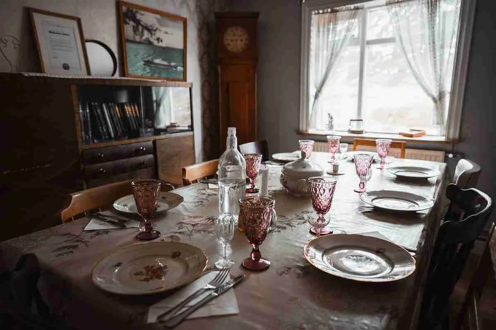
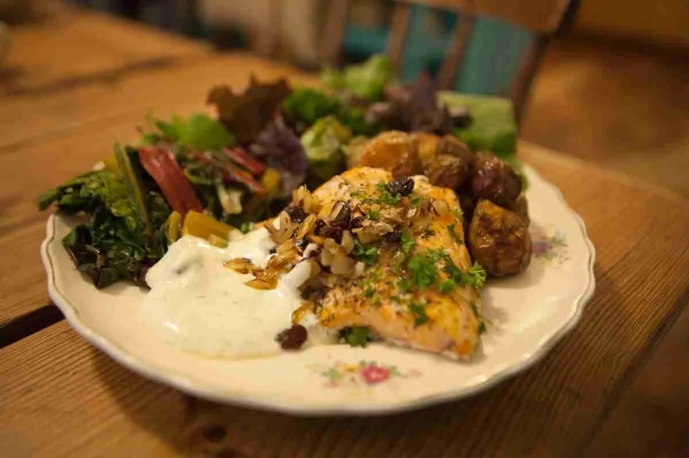
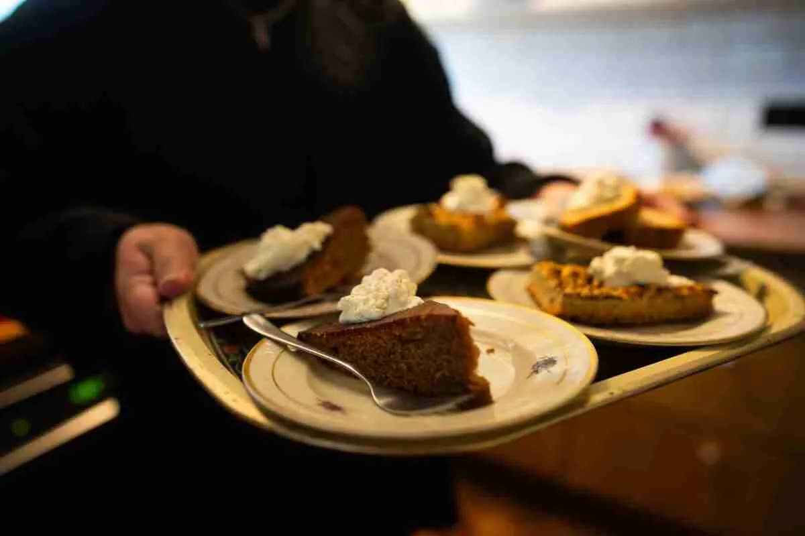
Dinner service and food tours all year. We take dietary needs into careful consideration.